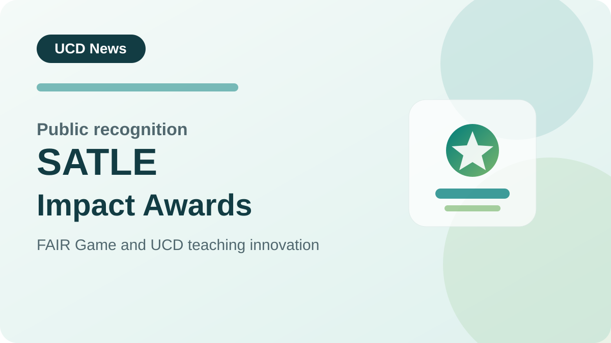

Featured story
14 January 2026
HEA names two UCD projects as winners of 2025 SATLE Impact Awards
UCD recognised the impact of two teaching and learning projects, including FAIR Game led by Guerrino Macori.